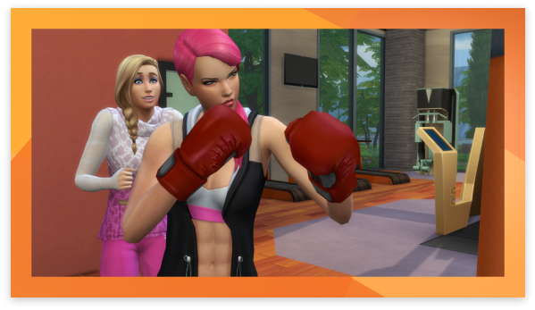
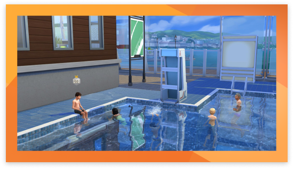

×
Hustle! The Sims 4: Get Fit Is Here!
Elevate your Sim’s fitness and embody an active lifestyle with The Sims™ 4: Get Fit.
 GET COMPETITIVE AGAINST YOUR FRIENDS
Challenge your friends to scale the rock climbing treadmill as a fun way to burn energy and improve their physique. Choose from a collection of fashionable activewear, and decorate your Sim’s home with nature-inspired objects and décor.
GET COMPETITIVE AGAINST YOUR FRIENDS
Challenge your friends to scale the rock climbing treadmill as a fun way to burn energy and improve their physique. Choose from a collection of fashionable activewear, and decorate your Sim’s home with nature-inspired objects and décor.

SHAPE UP YOUR SPACE
Invite the outdoors into your Sim’s home with nature-inspired objects and décor that convey a sense of motion. Build a spacious fitness studio to watch workout videos, or create a modern bathroom space that’s perfect for a post-exercise soak.
 UNLOCK ROCKCLIMBING SKILLS
Your sims can use their rock climbing skill for sport, or to actually summit the entire mountain and be able to climb to the top to eventually become a master rock climber. You may also want to purchase some climbing gear that can be purchased on your sim’s computer, or at a vending machine in Mt. Komorebi.
UNLOCK ROCKCLIMBING SKILLS
Your sims can use their rock climbing skill for sport, or to actually summit the entire mountain and be able to climb to the top to eventually become a master rock climber. You may also want to purchase some climbing gear that can be purchased on your sim’s computer, or at a vending machine in Mt. Komorebi.

SINK OR SWIM!
Yes, in The Sims 4 you can now build pools on the ground level, on the second floor and even on the roof! Your Sims don't have to swim, they can sit along the pool ledge and chat with other Sims who are in the pool or get competitive and swim laps in your local gym’s indoor pool.